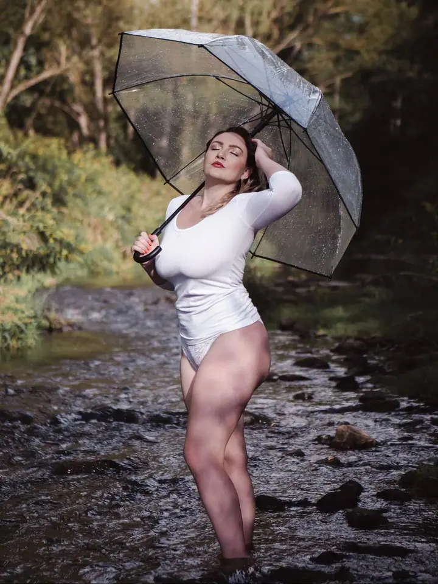

Portréty
Ženské portréty venku i ve městě, kde rozhoduje světlo, místo a výraz. Focení si spolu připravíme podle toho, co vám sedí.

Portrétní fotograf a videomaker
Jmenuji se Jaroslav Král a fotím portréty i natáčím krátká videa. Nejraději pracuji venku, v písku, v lese nebo u vody, kde má portrét kolem sebe prostor a přirozené světlo.
Zeptat se na termín
Ženské portréty venku i ve městě, kde rozhoduje světlo, místo a výraz. Focení si spolu připravíme podle toho, co vám sedí.
Focení ve spodním prádle nebo plavkách v přírodě, v písku, v lese nebo u vody. Klidně a s respektem, ať se před objektivem cítíte dobře.
Kromě fotek natáčím i krátká videa a reels přímo z focení. Fotky a video tak můžete mít z jednoho dne.
Jsem fotograf a videomaker a pod značkou Jaroslav Král Production se věnuji hlavně ženským portrétům. Nejčastěji mě najdete v pískovně, u řeky nebo v lese, ale rád fotím i ve městě mezi sloupy a na schodech.
Patřím mezi fotografy přijaté na Czech Art Photo. Kromě barevných fotek mám i samostatný Instagram jen s černobílou tvorbou, protože černobílá fotka mě pořád baví a učí dívat se na světlo jinak.
Svou práci sdílím i na Patreonu. Na focení se snažím, aby to byla pohoda a ne stres, a když chcete, natočím vám ze stejného dne i video.
Napíšete mi, co si představujete, a společně ujasníme styl focení, jestli chcete jen fotky, nebo i video.
Vybereme lokaci, třeba pískovnu, les, řeku nebo město, a poradím vám, co si vzít na sebe.
Fotíme v klidu a bez spěchu. Pomůžu vám s pózováním, takže nemusíte mít žádné zkušenosti.
Z focení vyberu nejlepší snímky a upravím je. Pokud natáčíme, sestříhám i video.
Určitě. Během focení vás povedu a řeknu vám, jak se postavit, kam se dívat a co dělat s rukama.
Nejraději venku v přírodě, v pískovně, u vody nebo v lese. Fotím ale i ve městě, záleží na tom, co se hodí k vašemu nápadu.
Ano, kromě fotek natáčím i krátká videa. Stačí to říct při domluvě a připravíme focení i na video.
Samozřejmě. Hlavní je, abyste se cítila příjemně, takže pokud vám to pomůže, vezměte s sebou kamarádku nebo partnera.